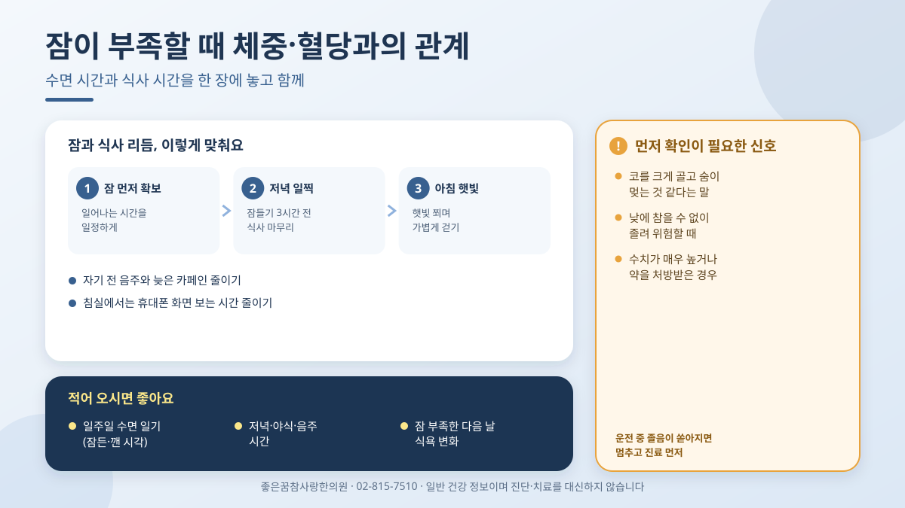

이종호 한의사 감수좋은꿈참사랑한의원 대표원장 (한의사 면허번호 19769)발행 2026-11-26 · 수정 2026-11-26
이 글의 차례
밤 11시 40분, 야근을 마치고 지하철역 계단을 올라옵니다. 집으로 가는 길목의 편의점 불빛이 오늘따라 유난히 밝습니다. 저녁은 다섯 시쯤 책상 앞에서 김밥 한 줄로 때웠으니 배가 고픈 것도 당연하지요.
컵라면과 달콤한 커피 우유를 들고 계산대 앞에 서면 머릿속 한쪽에서 작은 목소리가 들립니다. '이러면 안 되는데.' 그래도 오늘은 어쩔 수 없다고 스스로를 달래며 봉지를 듭니다.
집에 와서 먹고 씻고 휴대폰을 조금 보다 보면 새벽 한 시가 훌쩍 넘습니다. 아침은 커피 한 잔으로 넘기고, 오후 세 시가 되면 눈꺼풀이 무거워 서랍 속 과자에 손이 갑니다. 그러던 어느 날 건강검진 결과지에서 '혈당 주의', '체중 관리 필요' 같은 글자를 보게 됩니다.
진료실에서 이런 말씀을 자주 듣습니다. "잠을 못 잔 날은 이상하게 하루 종일 먹을 걸 찾게 돼요." 그 말 끝에는 대개 자책이 붙어 있습니다. 내가 의지가 약해서 그런 것 같다고, 남들은 다 참는데 나만 못 참는 것 같다고요.
잠까지 줄여 가며 하루를 버텨 내신 분께 의지 탓까지 얹어 드리고 싶지는 않습니다. 그 허기에는 이유가 있을 수 있고, 이유를 알면 덜 자책하면서 손볼 곳을 찾을 수 있습니다.
먼저 답부터 드리겠습니다. 네, 영향이 있을 수 있습니다. 잠이 부족하면 식욕이 커지고 단 음식이 당기며, 체중과 혈당을 관리하기가 어려워지는 경향이 있다고 알려져 있습니다. 그래서 저는 체중이나 혈당이 걱정되어 오신 분께도 잠부터 여쭙고, 잠드는 시각과 저녁 식사 시각을 한 장에 나란히 놓고 함께 봅니다.
왜 잠이 모자라면 식욕과 혈당이 함께 흔들릴까요
잠은 그냥 누워 있는 시간이 아닙니다. 낮 동안 쓴 몸을 정리하고 다음 날 쓸 힘을 채우는 시간입니다. 이 시간이 모자라면 몸은 부족한 힘을 다른 데서 끌어오려 합니다. 가장 손쉬운 길이 먹는 것이지요.
일반적으로 알려진 내용을 쉬운 말로 옮기면 이렇습니다.
- 잠이 짧으면 배고픔을 알리는 신호는 커지고, 배가 부르다는 신호는 약해지는 경향이 있습니다.
- 지친 몸은 빨리 힘이 되는 단 음식과 기름진 음식을 더 찾기 쉽습니다.
- 잠이 부족하면 몸이 혈당을 다루는 데 더 애를 쓰게 되어 혈당과 혈압 관리가 어려워질 수 있습니다.
- 반대로 늦은 저녁과 야식, 음주는 잠을 얕게 하고 새벽에 깨게 만들기도 합니다.
- 피곤하면 덜 움직이고, 낮에 덜 움직이면 밤에 잠이 얕아지기 쉽습니다.
이렇게 놓고 보면 잠과 식욕은 서로 꼬리를 무는 고리에 가깝습니다. 못 자서 더 먹고, 늦게 먹어서 또 못 자는 식이지요. 그래서 저는 어느 한 고리라도 먼저 느슨하게 풀어 보자고 말씀드립니다. 모든 걸 한꺼번에 바꾸지 않아도 됩니다.
한의학에서는 식욕과 체중을 소화의 힘, 몸의 온기, 잠, 마음의 긴장과 함께 봅니다. 그래서 '얼마나 먹는가'만큼 '언제, 어떤 기분일 때 먹는가'를 여쭙습니다. 식사 뒤에 유난히 졸린지, 잘 붓는지, 손발이 찬지, 대변은 어떤지도 같은 이야기의 한 부분입니다.
수면무호흡도 짚어 두겠습니다. 자는 동안 숨길이 자꾸 막히면 오래 누워 있어도 깊이 쉬지 못합니다. 수면무호흡은 비만, 혈압, 혈당과도 관련이 있다고 알려져 있어서, 코골이가 심하다면 잠의 질부터 확인하는 것이 순서입니다.
밤의 허기는 의지 탓만이 아닙니다
야식 이야기를 꺼내면 고개를 숙이는 분이 많습니다. 그런데 하루 일정을 찬찬히 들어 보면 이유가 보일 때가 많습니다. 점심을 열두 시에 먹고 저녁을 밤 열 시가 넘어 먹는다면 열 시간 가까이 빈속으로 일하신 셈입니다. 그 끝에 찾아오는 허기는 참을성만으로 버티기 어렵습니다.
또 하나 여쭙는 것이 있습니다. 밤 열한 시의 그 허기가 정말 배가 고픈 것인지, 입이 심심하고 마음이 허전한 것인지입니다. 지친 하루 끝에 달콤한 것으로 나를 달래고 싶은 마음은 누구에게나 있습니다.
저는 그 마음을 나무라고 싶지 않습니다. 다만 그 위로를 음식 말고도 받을 길이 있는지 함께 찾아보고 싶습니다. 따뜻한 물에 몸을 담그는 시간일 수도, 조금 일찍 불을 끄고 눕는 일일 수도 있습니다. 식욕을 돌보는 일은 때로 잠을 돌보는 일에서 시작됩니다.
진료실에서 자주 뵙는 모습
특정한 누구의 이야기가 아니라, 잠과 식욕 사이에서 애쓰시는 분들께 자주 겹쳐 보이는 모습을 적어 보겠습니다. 지금 내 모습과 닮은 데가 있는지 떠올려 보셔도 좋겠습니다.
예를 들어 야근이 잦아 밤 11시가 넘어 저녁을 먹는 직장인이라면, 저녁 시각을 당기는 것부터가 쉽지 않습니다. 이럴 때는 퇴근 전 가벼운 간식으로 끼니 사이 간격을 줄이고, 잠들기 3시간 전 식사를 목표로 조금씩 시각을 당겨 보자고 함께 정합니다.
예를 들어 새벽까지 공부하며 단 음료로 버티는 수험생이라면, 잠드는 시각과 오후 카페인 시각부터 적어 봅니다. 공부 시간을 줄이자는 말이 아닙니다. 같은 시간을 앉아 있어도 잠이 받쳐 줘야 머리가 덜 무겁기 쉬워서, 잠을 공부 계획 안에 넣어 보자는 것입니다.
예를 들어 밤중에 아이 때문에 자주 깨고 낮에는 단 것으로 버티는 육아 중인 분도 계십니다. 이런 분께 밤에 푹 주무시라는 말은 공허하게 들릴 뿐이지요. 대신 낮에 잠깐 눈 붙일 틈과 끼니를 거르지 않을 방법을 같이 찾습니다. 아이를 먹이다 정작 본인은 서서 대충 드시는 경우가 많으니까요.
자주 하는 오해, 조금 풀어 드릴게요
"주말에 몰아서 자면 되잖아요." 평일에 모자란 잠을 주말에 채우고 싶은 마음은 이해합니다. 그런데 일어나는 시각이 크게 흔들리면 일요일 밤에 잠이 오지 않아 월요일이 더 힘들어지기 쉽습니다. 주말에도 평일보다 한 시간 넘게 늦게 일어나지 않아야 리듬을 지키기 쉽습니다.
"잠이 안 올 땐 술 한잔이 도움이 되던데요." 술을 마시면 금방 잠드는 것처럼 느껴질 수 있습니다. 하지만 술은 잠을 얕게 하고 새벽에 깨게 만들 수 있습니다. 안주까지 곁들이면 늦은 야식이 하나 더 생기는 셈이고요.
"저녁을 아예 굶으면 잠도 잘 오고 살도 빠지겠죠." 너무 배가 고프면 오히려 잠이 깨기도 합니다. 무리하게 굶는 방식은 오래 이어 가기 어렵고, 근육이 적은 분은 근육이 함께 빠질 수 있어서 저는 말리는 편입니다. 굶기보다 이른 시간에 가볍게 드시는 쪽을 권합니다.
"살만 빼면 잠은 저절로 따라오겠죠." 잠과 식사는 서로 영향을 주고받습니다. 한쪽만 붙잡고 있으면 다른 쪽이 발목을 잡기 쉬워서, 두 가지를 함께 살피는 편이 오래갑니다.
먼저 이렇게 여쭙니다
처음 오시면 저는 이런 것부터 하나씩 여쭙습니다. 기억나지 않는 것은 비워 두셔도 괜찮습니다.
- 보통 몇 시에 눕고 몇 시에 일어나시는지, 아침에 개운하신지
- 잠을 설친 다음 날 식욕이 어떻게 달라지는지, 단 것이 당기는 시간대는 언제인지
- 저녁 식사와 야식, 술자리는 보통 몇 시인지
- 코를 곤다거나 자다가 숨이 멎는다는 말을 들은 적이 있는지, 낮에 참기 어려울 만큼 졸린지
- 최근 검진에서 혈당·혈압·체중·허리둘레에 대해 들은 이야기와 지금 드시는 약
"잠을 잘 못 자요"라는 한마디에도 여러 사정이 들어 있습니다. 잠드는 데 오래 걸리는지, 자다가 자주 깨는지, 너무 이른 새벽에 깨서 다시 못 드는지에 따라 다음 날의 피로와 식욕이 다르게 나타납니다. 그래서 이 대목은 조금 꼼꼼하게 여쭙는 편입니다.
스스로 점검해 보세요
- 잠이 하루 6시간이 안 되는 날이 일주일에 세 번 이상이다
- 잠을 설친 다음 날 단 음식이나 야식이 유난히 당긴다
- 저녁 식사를 잠들기 2시간 안에 하는 날이 많다
- 평일과 주말의 기상 시각이 두 시간 넘게 차이 난다
- 중요한 일을 앞둔 밤에 1시간 넘게 뒤척이거나, 밤에 다섯 번 넘게 깨는 날이 있다
- 코를 골거나 자다가 숨이 멎는다는 말을 들은 적이 있다
- 낮에 앉아 있으면 참기 어려울 만큼 졸리다
해당하는 항목은 진료 때 말씀해 주시면 상담이 쉬워집니다. 저는 강의에서 중요한 일을 앞두고 1시간 넘게 뒤척이거나 밤에 다섯 번 넘게 깨는 경우를 잠의 문제를 함께 살펴볼 기준으로 소개하곤 합니다. 코골이와 숨 멎음, 낮의 심한 졸음은 수면 검사가 먼저 필요할 수 있습니다.
일상에서 먼저 해 볼 수 있는 것
약을 생각하기 전에, 몸이 하루의 흐름을 기억하도록 돕는 방법부터 권합니다. 아래를 다 하려고 하지 마시고 마음이 가는 한두 가지를 2주쯤 이어 가 보세요.
- 잠드는 시각보다 일어나는 시각을 먼저 일정하게 맞추기
- 저녁은 잠들기 3시간 전쯤 가볍게 마치고, 늦어지는 날은 퇴근 전 가벼운 간식으로 간격 줄이기
- 저녁에 20~30분, 옆 사람과 이야기를 나눌 수 있을 만큼의 속도로 걷기
- 잠들기 1~2시간 전 따뜻한 물에 몸 담그기(시간이 없으면 따뜻한 샤워나 발만 10~15분)
- 오후 늦게는 카페인을, 잠들기 전에는 술을 줄이기
- 잠자리에서는 휴대폰을 내려놓고 몇 분 동안 편안하게 들이쉬고 조금 길게 내쉬기(어지러우면 바로 멈추기)
일어나는 시각을 먼저 잡는 데에는 이유가 있습니다. 잠드는 시각은 마음대로 되지 않는 날이 많지만, 일어나는 시각은 알람으로라도 지킬 수 있습니다. 아침이 일정해지면 밤에 졸음이 오는 시각도 조금씩 자리를 잡습니다. 아침 햇빛을 쬐며 몇 분 걷는 것도 같은 쪽으로 돕습니다.
못 지킨 날이 생겨도 스스로를 탓하지 않으셨으면 합니다. 다음 날 다시 하면 됩니다. 저는 큰 목표보다 해낼 수 있는 만큼을 함께 정하는 편이고, 그게 오래가는 길이라고 믿습니다.
결과지의 숫자 옆에 잠을 적어 보면
건강검진 결과지를 들고 오시는 분이 많습니다. 공복혈당, 당화혈색소, 허리둘레, 혈압, 중성지방 같은 칸이 '정상'과 '주의' 사이에 걸려 있으면 마음이 쓰이지요. 기준은 검사 기관에 따라 조금씩 다를 수 있으니 결과지에 적힌 기준과 함께 보시면 됩니다.
저는 그 숫자 옆에 잠 이야기를 한 줄 적어 보시라고 권합니다. 검사 전 며칠 동안 몇 시에 주무셨는지, 늦은 야식이 있었는지 같은 것들입니다. 숫자만 남은 종이보다 그 한 줄이 붙은 종이가 다음 진료에서 훨씬 많은 이야기를 해 줍니다.
필요하다고 판단될 때는 인바디 770으로 체성분을 재거나, 당화혈색소 검사기로 최근 혈당 흐름을 참고로 확인하기도 합니다. 당화혈색소는 그날 하루의 혈당이 아니라 최근 2~3개월의 평균적인 흐름을 반영하는 수치입니다. 두 가지 모두 모든 분께 하는 검사는 아니고, 진단을 대신하지도 않습니다.
인바디 결과지도 마찬가지입니다. 같은 체지방량이라도 잠을 설치는 분과 소화가 무거운 분은 생활에서 먼저 손볼 곳이 다릅니다. 숫자는 같아도 사연이 다르기 때문입니다. 그래서 저는 결과지보다 그 사연을 먼저 듣고 싶습니다.
한의원에서 함께 살필 수 있는 경우
- 잠이 얕고 그다음 날 식욕이 들쭉날쭉한 경우
- 저녁을 늦게 먹고 속이 더부룩해 잠들기 어려운 경우
- 몸이 쉽게 붓고 아침마다 무거운 경우
- 검진에서 혈당이나 체중이 '경계'라는 말을 듣고 생활부터 정리하고 싶은 경우
첫 방문에는 잠드는 시각과 깨는 시각, 끼니 시간, 검진 결과와 드시는 약부터 여쭙습니다. 그리고 양손을 내어 달라고 말씀드립니다. 손목의 맥을 짚으며 몸이 얼마나 지쳐 있는지 가늠하고, 필요하면 혀와 배도 함께 살핍니다. "체중 때문에 왔는데 맥은 왜 보세요?" 하고 의아해하시는 분도 계십니다.
같은 '살이 쪘다', '늘 피곤하다'는 말에도 잠을 못 자서 지친 분, 소화가 안 되어 먹은 것이 힘이 되지 못하는 분, 마음에 걸린 일이 있어 몸이 따라 무거운 분이 섞여 있습니다. 맥과 생활 이야기를 함께 들어야 어느 쪽에 가까운지 조금 더 또렷해집니다.
그다음 수면 기록과 식사 기록을 나란히 놓고 어느 쪽부터 손대면 좋을지 함께 정합니다. 상태에 맞춰 침이나 한약 상담 등을 말씀드리는데, 한약이 필요하다고 판단될 때도 일부 약재는 가슴이 두근거리거나 잠이 잘 오지 않는 반응이 있을 수 있어 평소 혈압과 잠을 여쭈며 신중하게 정합니다.
체중을 살피려다 잠을 흔들어서는 안 되니까요. 혈당과 혈압의 진단과 약은 내과에서 받으시도록 안내하고, 수면무호흡이 의심되면 수면 검사가 가능한 의료기관을 먼저 권해 드립니다. 계획은 한 번 정하면 끝이 아닙니다. 해 보니 지키기 어려웠던 사정까지 들어야 다음 계획을 무리 없이 다시 세울 수 있습니다.
얼마나 지켜보고, 언제 상담하면 좋을까요
기상 시각과 저녁 식사 시각을 2주 정도 일정하게 지켜 보면서 잠과 식욕이 어떻게 달라지는지 적어 보세요. 2~4주가 지나도 잠이 얕고 낮의 피로나 밤의 야식이 이어진다면 상담을 받아 보시길 권합니다.
꼭 그만큼 기다리실 필요는 없습니다. 하루하루가 버겁다면 그때가 상담하실 때입니다. 다만 운전 중 졸음이 쏟아지거나 자다가 숨이 멎는다는 말을 들으셨다면, 기다리지 말고 수면 검사가 가능한 의료기관을 먼저 찾으세요.
이렇게 기록해 오시면 상담이 쉬워집니다
- 일주일 수면 일기(잠든 시각, 깬 시각, 깬 횟수, 아침에 개운했는지)
- 저녁 식사·야식·술자리 시각과 대략 무엇을 드셨는지
- 잠이 부족했던 다음 날의 식욕과 단 것이 당긴 시간
- 최근 검진 결과지와 복용 중인 약(약 봉투 사진도 괜찮습니다)
- 코골이를 들은 적이 있다면 가족이 들려준 이야기
종이 한 장을 반으로 접어 왼쪽에는 잠을, 오른쪽에는 먹은 시각을 적어 보세요. 따로 적을 때는 안 보이던 것이 한 장에 모아 두면 보이기 시작합니다. 잠이 짧았던 날 오른쪽 칸이 유난히 길어지는지 같은 것 말이지요.
이런 증상은 먼저 확인이 필요합니다
- 코를 크게 골고 자다가 숨이 멎는 것 같다는 말을 들은 경우
- 낮에 참을 수 없이 졸려 운전이나 일이 위험한 경우
이런 신호가 있으면 한의원보다 가까운 병원이나 응급실을 먼저 찾으세요.
마치며
잠을 줄여 가며 버틴 하루는 게으른 하루가 아니었습니다. 누군가는 일을 마치느라, 누군가는 시험을 앞두고, 누군가는 아이를 돌보느라 잠을 내주었을 겁니다. 그 대가로 늘어난 허기까지 혼자 탓하지 않으셨으면 합니다.
오늘 밤에는 딱 하나만 정해 보세요. 내일 아침 몇 시에 일어날지. 그 한 가지가 저녁 시각을 당기고, 밤의 허기를 달래는 첫 고리가 될 수 있습니다.
다음에 진료실에서 뵈면, 저는 지난 한 주 몇 시에 주무시고 몇 시에 저녁을 드셨는지부터 여쭙겠습니다. 그리고 양손을 내어 달라고 말씀드리겠습니다.
함께 읽으면 좋은 글
- 야식을 끊기 어려울 때는 어떤 점을 먼저 살펴보나요?
- 잠과 컨디션을 위해 식사 시간과 목욕부터 바꾸라는 이유는 뭔가요?
- 코를 크게 골고 자다가 숨이 멎는 것 같을 때는 어떻게 하나요?

여쭙는 것
- 보통 몇 시에 눕고 몇 시에 일어나시는지, 아침에 개운하신지
- 잠을 설친 다음 날 식욕이 어떻게 달라지는지, 단 것이 당기는 시간대는 언제인지
- 저녁 식사와 야식, 술자리는 보통 몇 시인지
생활에서 해 볼 것
- 잠드는 시각보다 일어나는 시각을 먼저 일정하게 맞추기
- 저녁은 잠들기 3시간 전쯤 가볍게 마치고, 늦어지는 날은 퇴근 전 가벼운 간식으로…
- 저녁에 20~30분, 옆 사람과 이야기를 나눌 수 있을 만큼의 속도로 걷기
한의원에서 함께 살필 것
- 잠이 얕고 그다음 날 식욕이 들쭉날쭉한 경우
- 저녁을 늦게 먹고 속이 더부룩해 잠들기 어려운 경우
- 몸이 쉽게 붓고 아침마다 무거운 경우
먼저 확인이 필요한 신호
- 코를 크게 골고 자다가 숨이 멎는 것 같다는 말을 들은 경우
- 낮에 참을 수 없이 졸려 운전이나 일이 위험한 경우
한눈에 보는 표
| 구분 | 핵심 |
|---|---|
| 여쭙는 것 | 보통 몇 시에 눕고 몇 시에 일어나시는지, 아침에 개운하신지 잠을 설친 다음 날 식욕이 어떻게 달라지는지, 단 것이 당기는 시간대는 언제인지 |
| 생활에서 해 볼 것 | 잠드는 시각보다 일어나는 시각을 먼저 일정하게 맞추기 저녁은 잠들기 3시간 전쯤 가볍게 마치고, 늦어지는 날은 퇴근 전 가벼운 간식으로 간격 줄이기 |
| 한의원에서 함께 살필 것 | 잠이 얕고 그다음 날 식욕이 들쭉날쭉한 경우 저녁을 늦게 먹고 속이 더부룩해 잠들기 어려운 경우 |
| 먼저 확인이 필요한 신호 | 코를 크게 골고 자다가 숨이 멎는 것 같다는 말을 들은 경우 낮에 참을 수 없이 졸려 운전이나 일이 위험한 경우 |
자주 묻는 질문
잠을 잘 자면 체중이 줄어드나요?
결과를 약속드리지는 않습니다. 잠은 식욕과 활동에 영향을 주는 부분이라, 잠과 식사, 활동을 함께 살피는 것이 관리에 도움이 될 수 있습니다.
불면과 혈당·체중 문제를 함께 진료받을 수 있나요?
네. 잠과 식사, 소화, 몸의 온기를 함께 여쭙고 맥을 짚어 생활 전체의 리듬 속에서 살핍니다. 혈당의 진단과 약은 내과에서 받으시도록 안내합니다.
당화혈색소 검사는 모든 분이 받나요?
아니요. 필요하다고 판단될 때 안내합니다. 당화혈색소는 최근 2~3개월의 평균적인 혈당 흐름을 반영하는 수치로, 진단을 대신하지 않고 상담의 참고 자료로 봅니다.
코골이가 심하면 어디로 가야 하나요?
자다가 숨이 멎는 것 같은 코골이가 있다면 수면 검사가 가능한 이비인후과 등 의료기관에서 먼저 확인하세요.
퇴근 뒤에도 상담받을 수 있나요?
평일은 09:30~20:00(점심 13:00~14:00), 토·일·공휴일은 09:30~15:00에 진료합니다. 방문 전 전화(02-815-7510)로 확인해 주세요.
좋은꿈참사랑한의원은 재진 때 지난번 이야기부터 이어서 여쭙니다. 진료시간과 예약은 오시는 길에서 확인하세요.
어디서 상담받을 수 있나요?
좋은꿈참사랑한의원은 서울 동작구 만양로2길 2 신성빌딩 3층·5층(서울 동작구 상도동, 7호선 상도역 3번 출구 근처)에 있습니다. 한의사 3명(이종호 대표원장, 조영기 수석진료원장, 정원영 진료원장)이 진료합니다. 진료시간은 평일 09:30~20:00(점심 13:00~14:00), 토·일·공휴일 09:30~15:00이며, 방문 전 전화로 확인을 권합니다. 예약은 네이버 예약, 카카오톡 상담, 전화 02-815-7510로 받습니다.
이 글은 일반적인 건강 정보이며 개인의 진단이나 치료를 대신하지 않습니다. 증상이 있거나 복용 중인 약이 있다면 진료를 통해 확인하세요. 치료 효과는 개인마다 다를 수 있습니다.
작성 기준: 일반적으로 알려져 있는 건강 정보를 참고해 정리했습니다(대표원장 감수). 증상 기록은 1~2주 동안 하루 1회, 비슷한 시간에 적어 오시면 지난 상태와 비교하기 쉽습니다.